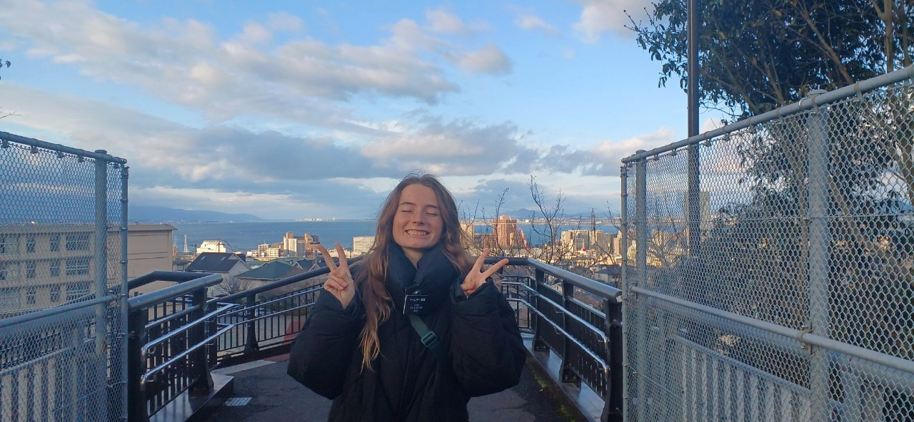
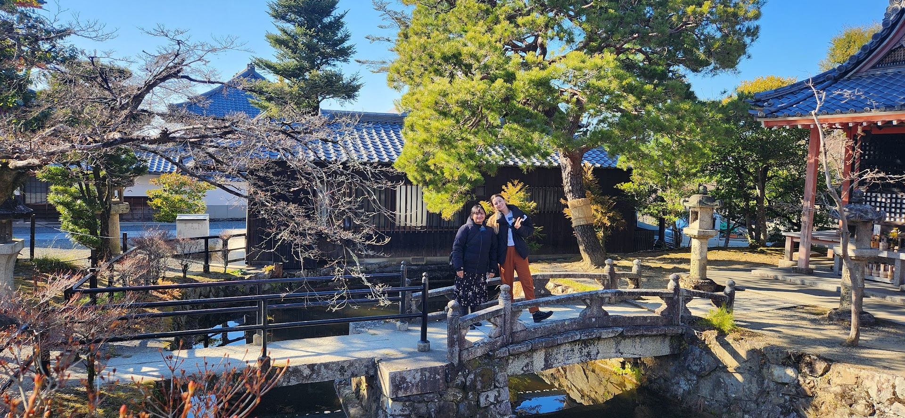

Otsu
Shiga
Otsu is what I would call a Japanese suburb. There are a lot of people living there, but anything truly big and exciting requires travel. Otsu is a town right next to the biggest lake in Japan, Lake Biwako. It has lots of twisting and turning roads that are fun to explore and easy to get lost on. Otsu is also built up on a mountain or hill, so if the twisting roads weren’t enough, the hills make it almost impossible to bike on.
 